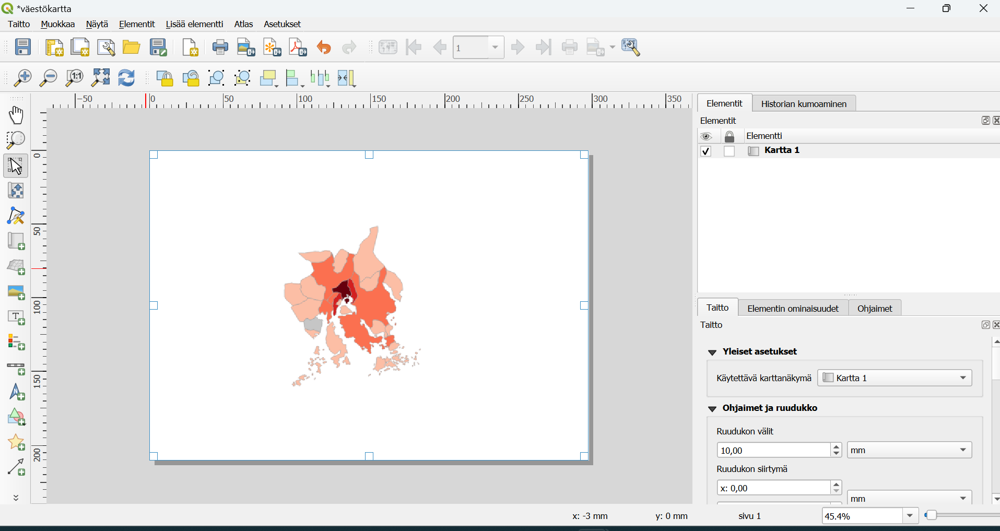
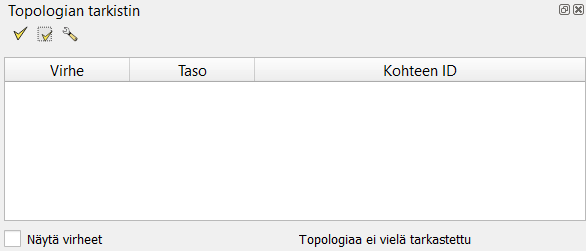
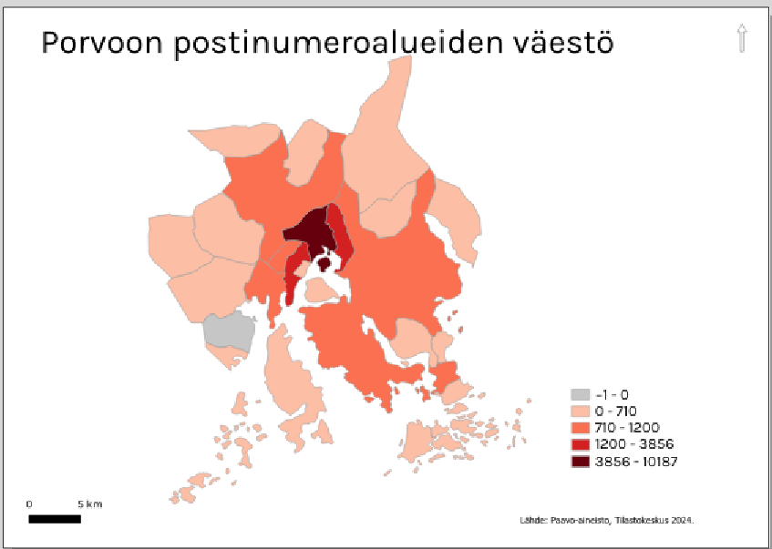

Harjoitus 4: Karttatuloste
Harjoituksen sisältö
Harjoituksessa tehdään karttatuloste.
Harjoituksen tavoite
Koulutettava oppii laatimaan karttatulosteen halutussa mittakaavassa sekä tehdä tulosteesta PDF-tiedoston.
Valmistautuminen
Käynnistä QGIS-ohjelmisto. Avaa toisen harjoituksen projekti, eli se missä tehtiin teemakarttaa. Vaihtoehtoisesti voit lisätä jotain muuta aineistoa, tässä harjoituksessa emme visualisoida aineistoa, vaan me harjoitellaan karttatulosteiden tekemistä.
Karttatuloste
Uuden tulosteen muodostaminen voidaan aloittaa kahdella tavalla, valitse Projekti → Uusi taitto tai paina työkalua:

Ensimmäisenä kysytään uuden taiton nimeä. Anna taitolle jokin sitä hyvin kuvaava nimi. Taittoa varten avautuu uusi ikkuna.

Paina tulosalueella hiiren oikealla näppäimellä ja valitse Sivun ominaisuudet. Tarkista Elementin ominaisuudet -välilehdestä oikeasta paneelista, että paperin kooksi A4, suunta Vaaka ja Taitto-välilehdestä, että viennin resoluutio on 300 dpi. Tämän jälkeen voimme sijoittaa karttanäkymän tulosteelle, valitse työkalupalkista työkalu:

Vedä tulosalueelle suorakulmio, karttanäkymän mukainen kartta piirtyy näytölle.

Valitse Elementin ominaisuudet -välilehti ja muuta kartan parametrejä seuraavasti:
- Kartan mittakaavaksi 1:250 000
- Valitse Kehys (piirtää kartalle reunaviivat)
Huomaa, että karttatulosteen hallinnassa on mahdollisuus siirtää yksittäisiä kohteita (nimikkeitä) tai muokata kartan sijaintia. Kohteen ollessa valittuna, voit siirtää sitä tulosteella seuraavan työkalun avulla:
 |
Valitse/siirrä elementtiä |
 |
Siirrä elementin sisältöä (esimerkiksi kartan sisältöä) |
|  | Zoomaa taiton näkymässä |
QGISin avulla voit muokata karttatulosteesi ulkoasua. Otsikko tai muu teksti voidaan lisätä Lisää uusi nimiö -työkalulla: 
Lisää uusi selite käyttäen: 
Ja lisää uusi mittakaava käyttäen: 
Huomaa, että näiden taiton elementtien ominaisuuksia voit muokata oikeanpuoleisen sivupalkin Elementin ominaisuudet -välilehden avulla. Tekstiä voi muokata tekstinkäsittelyohjelmista tutuilla työkaluilla:

Voit myös muokata selitteen ominaisuuksia. Huomaa, että sinun on poistettava kohdan Päivitä automaattisesti rasti. Pohjoisnuolen lisääminen tapahtuu lisäämällä kuva tällä työkalulla (vasemmasta palkista): 
Valitse sen jälkeen Elementin ominaisuudet -ikkunasta mieleisesi pohjoisnuoli-kuva (selaa sisältöä alaspäin, jos et heti näe nuolia).

Lopputulos voi olla esimerkiksi seuraavanlainen:

Halutessasi voit tallentaa käyttämäsi tulostemallin (layout englanniksi) ja hyödyntää sitä jatkossa seuraavien karttatulosteiden tekemiseen. Voit esimerkiksi muotoilla kollegoidesi käyttöön karttatulostemallin organisaatiollesi (logot, värit, tekstin paikka, jne.). Tämä onnistuu Tallenna malliksi -työkalulla: 
Lopputuloksen voit tulostaa tiedostoksi (kuvaksi tai pdf:ksi) tai tulostimeen.

Sopiva resoluutio karttatulosteellesi riippuu kartan käyttötarkoituksesta, mutta oletusarvoinen 300 dpi tallentaa resoluutioltaan hyvinkin tarkkoja kuvia. Voit valita arvoksi vaikkapa 200 dpi.
Lisätehtävä: Tutustu QGISin kartta-atlakseen
QGISillä on toiminto millä voidaan automatisoida karttojen luontia. Jos esimerkiksi haluaa monesta kaupuginosasta samantyylisiä karttoja, kannattaa harkita kartta-atlaksen käyttöä. Tutustu kartta-atlakseen esimerkiksi täällä ja mieti jos tästä voisi olla hyötyä sinulle.
Psst! Muista tallentaa QGIS-projekti harjoituksen lopuksi.